Overhaul
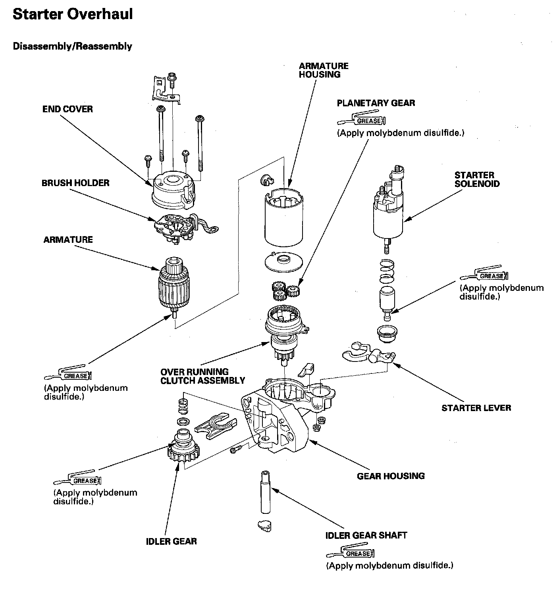
Starter Overhaul
Brush Holder Removal
1. Remove the starter.
2. Disconnect the wire from the M terminal, and remove the end cover.
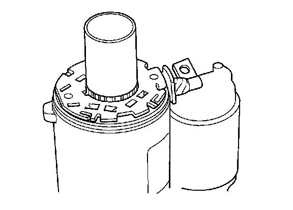
3. Place a plastic pipe with an outside diameter of 29.4 mm (1.16 in.) on the armature.
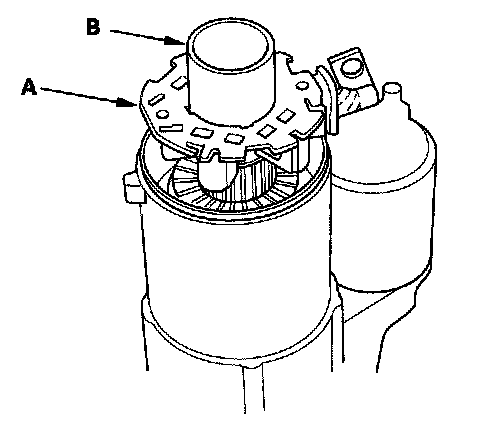
4. Move the brush holder (A) up to the pipe (B) while holding the pipe so the brushes do not pop out from the holder.
Armature Inspection and Test
5. Disassemble the starter as shown at the beginning of this procedure.
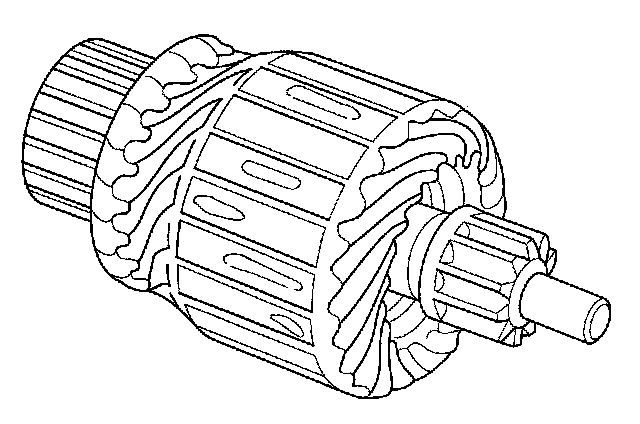
6. Inspect the armature for wear or damage from contact with the permanent magnet. If there is wear or damage, replace the armature.
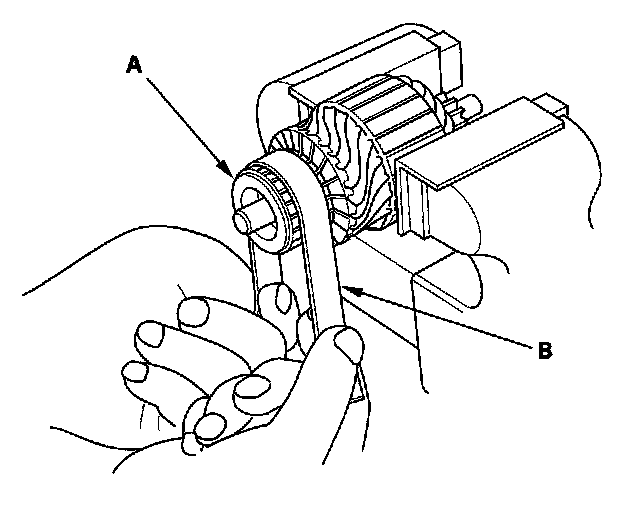
7. Check the commutator (A) surface. If the surface is dirty or burnt, resurface it with an emery cloth or a lathe to the following specifications, or recondition with #500 or #600 sandpaper (B).
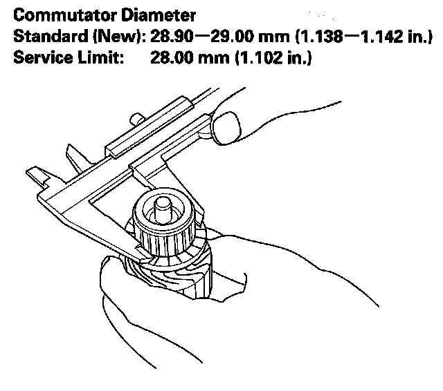
8. Check the commutator diameter. If the diameter is below the service limit, replace the armature.
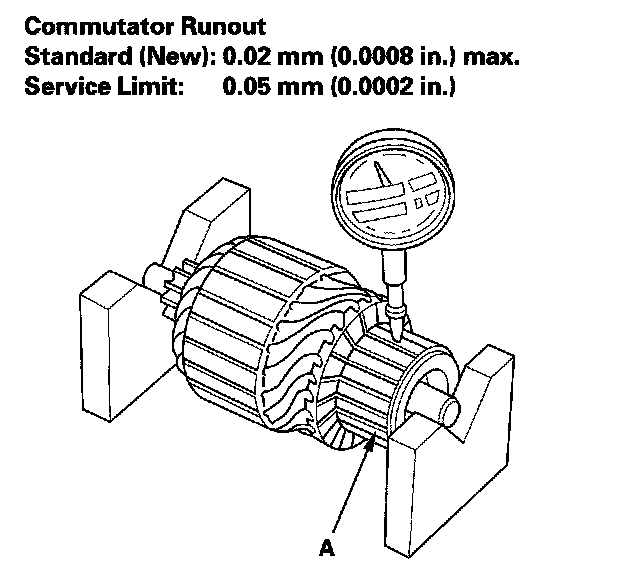
9. Measure the commutator (A) runout.
- If the commutator runout is within the service limit, check the commutator for carbon dust or brass chips between the segments.
- If the commutator runout is not within the service limit, replace the armature.
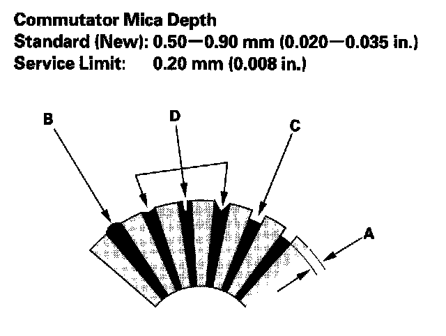
10. Check the mica depth (A). If the mica is too high (B), undercut the mica with a hacksaw blade to the proper depth. Cut away all the mica (C) between the commutator segments. The undercut should not be too shallow, too narrow, or V-shaped (D).
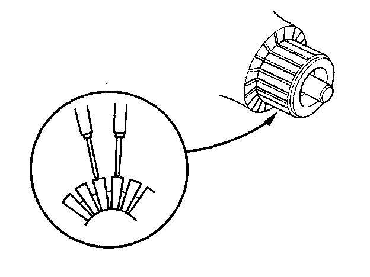
11. Check for continuity between the segments of the commutator. If there is an open circuit between any segments, replace the armature.
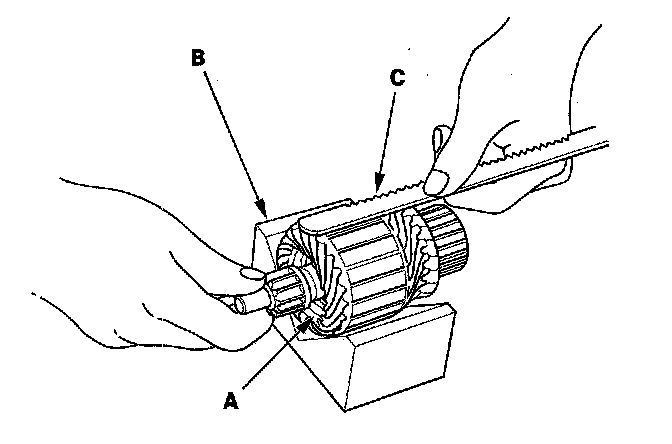
12. Place the armature (A) on an armature tester (B). Hold a hacksaw blade (C) on the armature core. If the blade is attracted to the core or vibrates while the core is turned, the armature is shorted. Replace the armature.
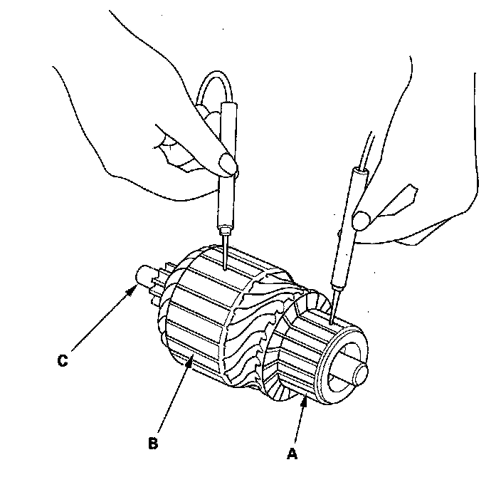
13. Use an ohmmeter to check for continuity between the commutator (A) and the armature coil core (B), and between the commutator and the armature shaft (C). If there is continuity, replace the armature.
Starter Brush Inspection
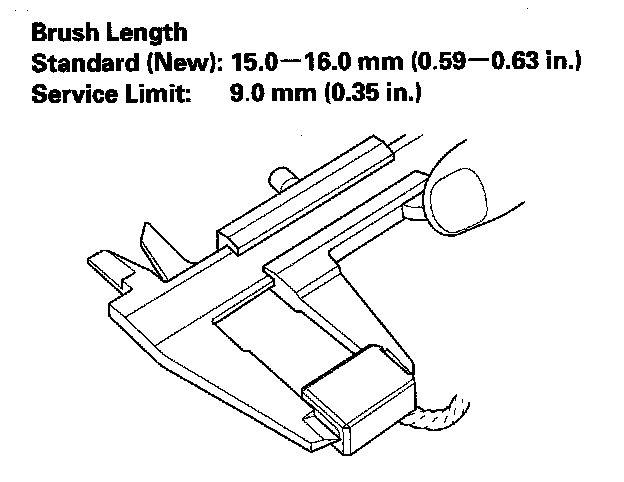
14. Measure the brush length. If it is shorter than the service limit, replace the brush holder assembly.
Starter Brush Holder Test
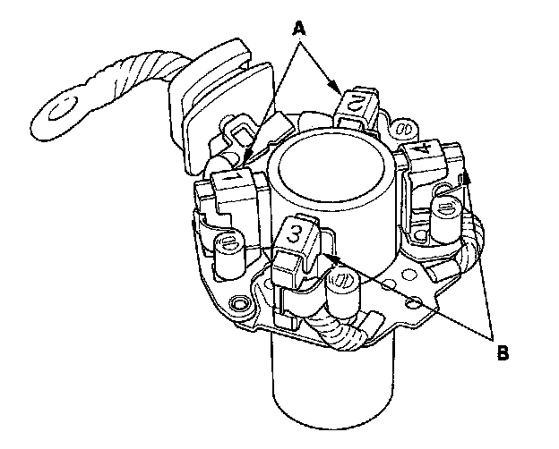
15. Check for continuity between the (+) brush (A) and (-) brush (B). If there is continuity, replace the brush holder assembly.
Brush Spring Inspection
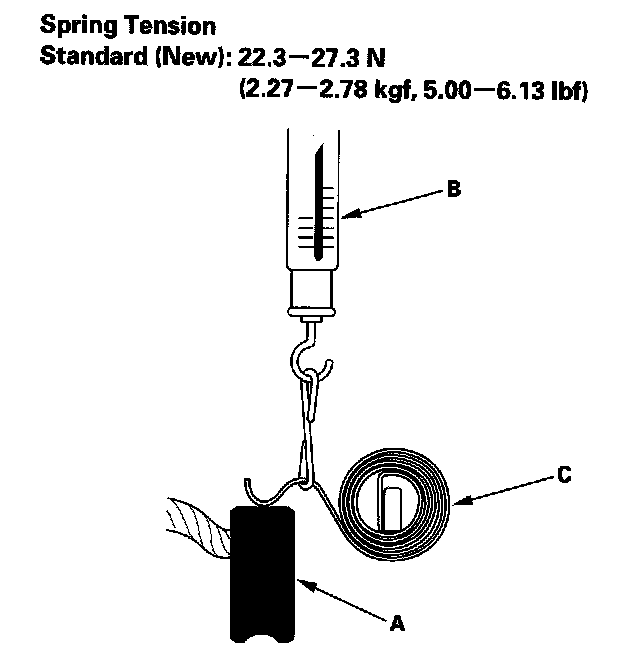
16. Insert the brush (A) into the brush holder, and bring the brush into contact with the commutator, then attach a spring scale (B) to the spring (C). Measure the spring tension at the moment the spring lifts off the brush. If it is not within the standard, replace the brush holder assembly.
Planetary Gear Inspection
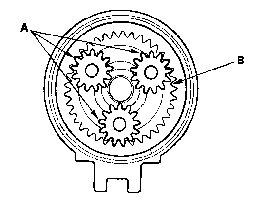
17. Check the planetary gears (A) and internal gear (B). Replace them if they are worn or damaged.
Overrunning Clutch Inspection
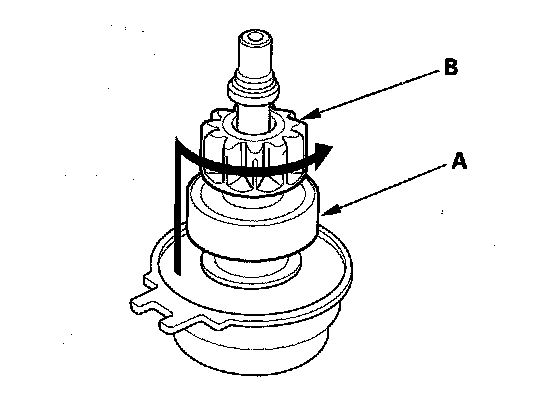
18. Slide the overrunning clutch (A) along the shaft. Replace it, if it does not slide smoothly.
19. Hold the drive gear (B), and turn the overrunning clutch in the direction shown to make sure it turns freely. Also make sure the overrunning clutch locks in the opposite direction. If it does not lock, replace the overrunning clutch assembly.
20. If the starter drive gear is worn or damaged, replace the overrunning clutch assembly; the gear is not available separately.
Check the condition of the torque converter ring gear. Replace it if the starter drive gear teeth are damaged.
Starter Reassembly
21. When you replace the brush holder or the armature housing, you need to seat the new brushes. Slip a strip of #500 or #600 sandpaper, with the grit side up, between the commutator and each brush, and smoothly turn the armature. The contact surface of the brushes will be sanded to the same contour as the commutator.
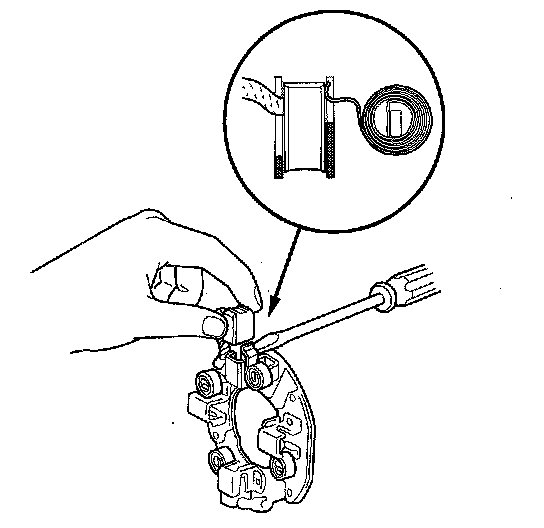
22. Pry back each brush spring with a screwdriver, then position the brush on the brush holder about halfway out of its holder. Release the spring to hold it in place.
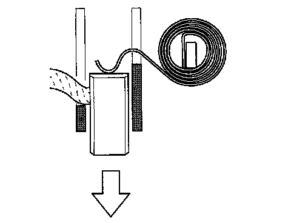
23. Push each brush down until it seats against the commutator, then release the spring against the end of the brush.
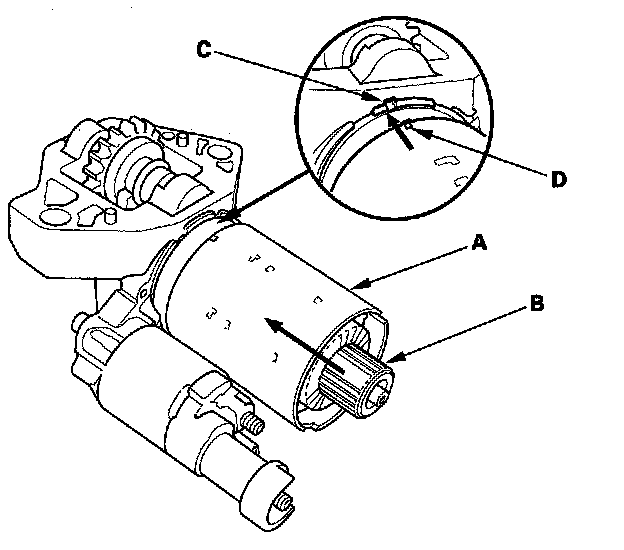
24. Install the armature housing (A) and armature (B) by aligning the slotted point (C) to the projection (D).
25. Install the armature into the housing.
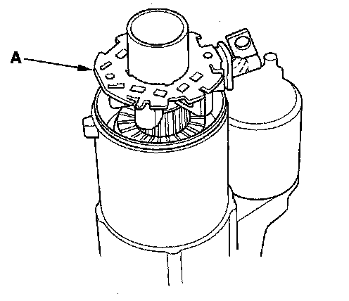
26. Place the brush holder assembly on the armature, then move the brush holder (A) down to the armature.
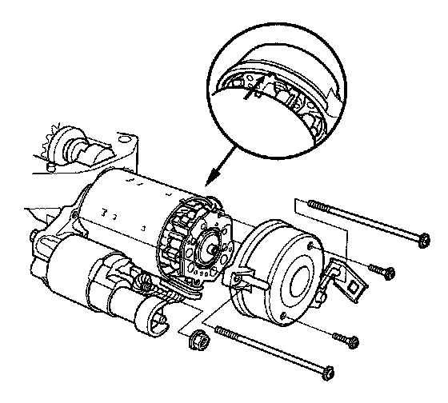
27. Install the end cover to retain the brush holder.